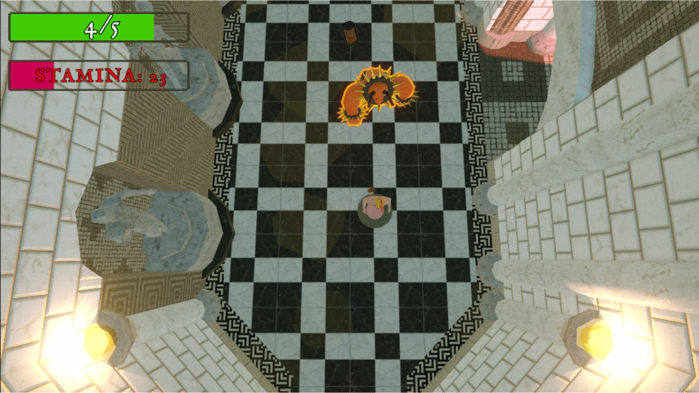
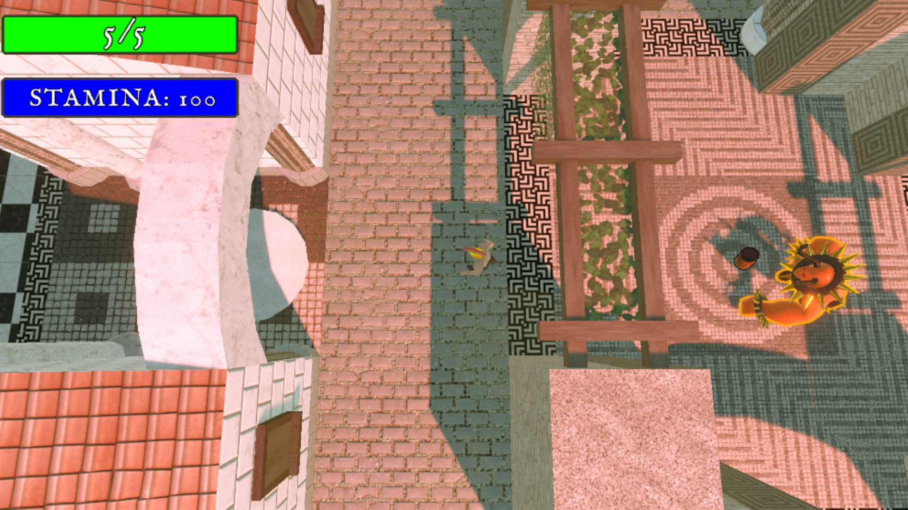
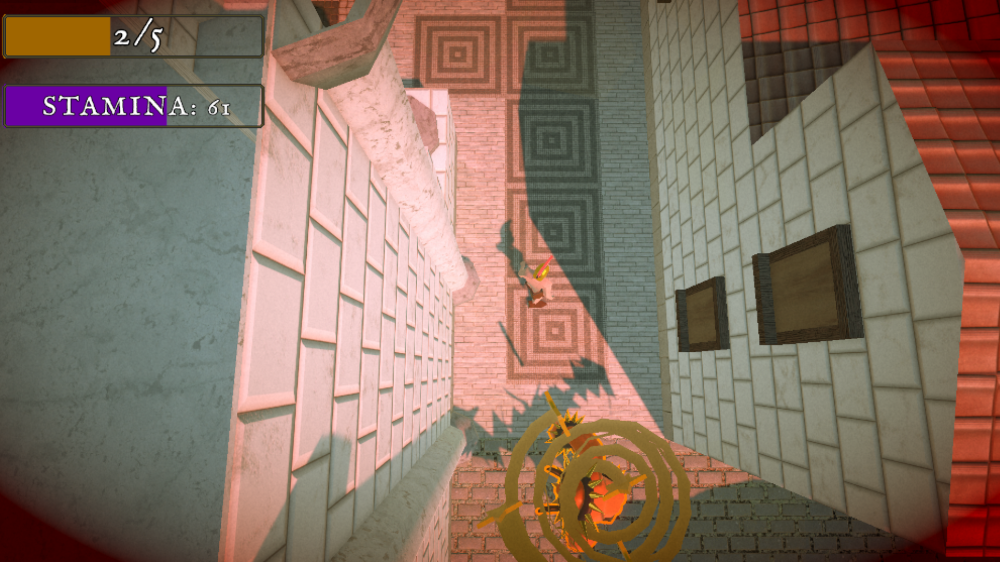

Description:
Play as a copy of Theseus. Run around in a maze, having to defeat the very Minotaur in Tartarus. Over and over again. The soul of the Minotaur can't rest. All it can do is chase the player and try to outsmart you.
Navigate the beautifully tiled halls of an ancient labyrinth, where every mosaic corridor could be your last. Manage your stamina wisely, running won't save you forever.



The Enemy behaviour I created within this game, I am quite proud off. Despite the demo version on Itch not having it. Within the Steam Version of the game, after you defeat the boss for the very first time.
The phases of the boss are interchangeable, meaning that there is no boss fight that feels a tad bit different.
This Game was created for a School project, created by 3 team members (Formerly 4). We hope you have fun with the game we created. Don't forget to always stay awesome.